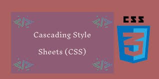

!



CSS — veb-sahifa yaratuvchilari tomonidan ranglar, shriftlar, alohida bloklarning tartibini va ushbu veb-sahifalarning paydo bo’lishining boshqa jihatlarini belgilash uchun ishlatiladi. CSS — ni ishlab chiqishning asosiy maqsadi veb-sahifaning (HTML yoki boshqa belgili tillari yordamida ishlab chiqilgan) mantiqiy tuzilishining tavsifini ushbu veb-sahifa (hozir rasmiy stili CSS vositasi bilan) (uni vegindagi ishlab chiqilayotgan) ko’rinish tavsifidan ajratish edi. Ushbu ajratish hujjatning mavjudligini oshirish, ko’proq moslashuvchanligi va taqdimotni boshqarish qobiliyatini ta’minlab, shuningdek tarkibiy tarkibdagi murakkablik va takrorlanuvchanlikni kamaytirishi mumkin.